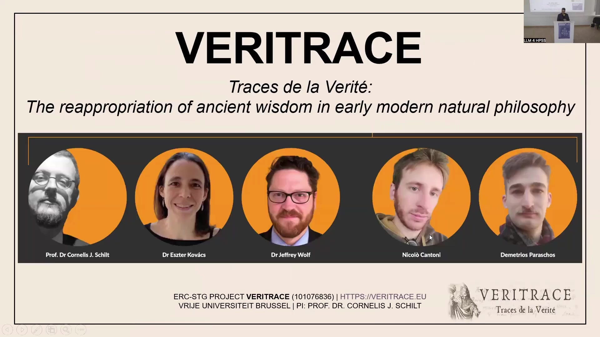
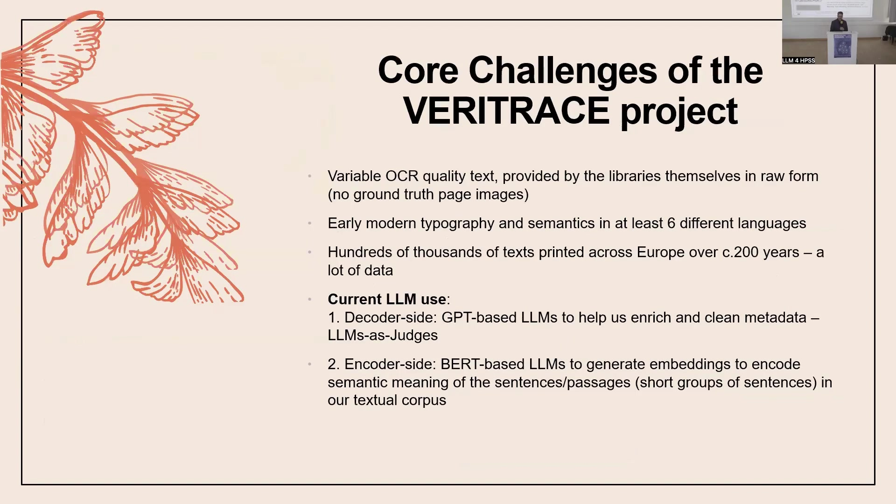
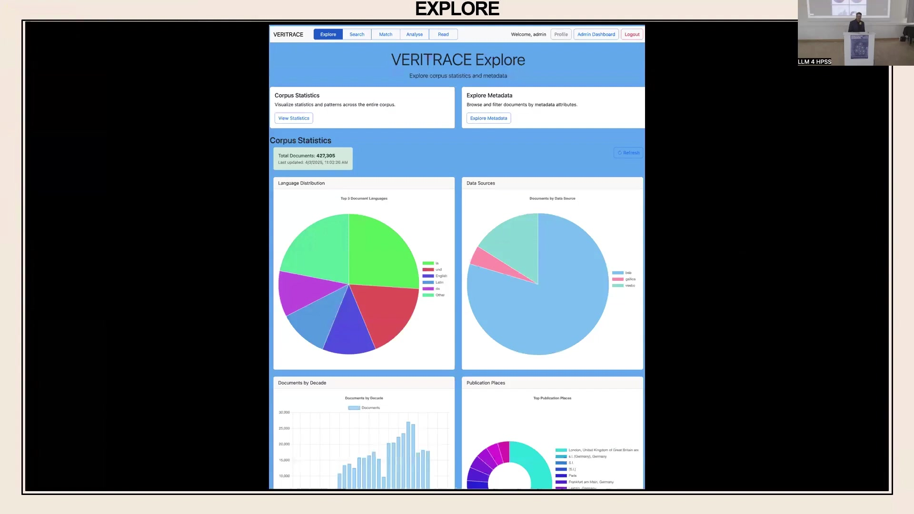

6 VERITRACE Traces de la Vérité: The reappropriation of ancient wisdom in early modern natural philosophy
Overview
The VERITRACE project, a five-year ERC (European Research Council) Starting Grant initiative, commenced in 2023 and is set to conclude in 2028. Researchers at the Vrije Universiteit Brussel (VUB) lead this ambitious undertaking, which aims to trace the profound influence of the early modern ‘ancient wisdom’ or Prisca Sapientia tradition on the development of natural philosophy and science. A dedicated team of five, comprising Professor Cornelis J. Schilt (Principal Investigator), Dr. Eszter Kovács, Dr. Jeffrey Wolf, Niccolò Cantoni, and Demetrios Paraschos, drives this interdisciplinary effort, combining rigorous historical scholarship with advanced digital humanities methodologies.
The project identifies key texts embodying this tradition, such as the Chaldean Oracles, the Sibylline Oracles, the Orphic Hymns, and the Corpus Hermeticum. Historical evidence confirms the tradition’s significant impact on prominent figures; for instance, Isaac Newton demonstrably engaged with the Sibylline Oracles, whilst Johannes Kepler possessed familiarity with the Corpus Hermeticum [Citation Needed for Historical Claims]. Beyond these well-known examples, the VERITRACE team aims to uncover a broader, often overlooked network of texts and authors, which scholars collectively term the ‘great unread’ [Citation Needed for “great unread” coinage].
To achieve this ambitious goal, the project pioneers a computational approach to the history and philosophy of science (HPSS). This involves large-scale multilingual exploration, employing both keyword search and sophisticated text matching techniques. The methodology seeks to identify both direct lexical reuse (e.g., direct quotations) and indirect semantic influence (e.g., paraphrases or subtle allusions) across a vast corpus. Essentially, the system functions as an ‘early modern plagiarism detector’, designed to reveal hidden networks of texts, passages, themes, topics, and authors, thereby potentially uncovering novel patterns in intellectual history.
The project’s substantial dataset comprises approximately 430,000 printed texts, spanning nearly two centuries from 1540 to 1728. These digital texts originate from three primary multilingual sources—Early English Books Online (EEBO), Gallica (from the French National Library), and the Bavarian State Library—encompassing at least six languages. Researchers apply state-of-the-art digital techniques, including keyword search, text matching, topic modelling, and sentiment analysis, to analyse this extensive corpus.
The team confronts several significant challenges inherent in processing historical texts at scale. Notably, the variable quality of Optical Character Recognition (OCR) text poses a primary concern. Libraries provide this raw text directly in formats such as XML, HOCR, and HTML, often without corresponding page images. Early modern typography and the evolving semantics across multiple languages further complicate processing. Moreover, the sheer volume of data—hundreds of thousands of texts printed across Europe—presents a formidable computational hurdle.
The project strategically leverages Large Language Models (LLMs) in two distinct capacities. On the decoder side, GPT-based LLMs function as ‘judges’ for enriching and cleaning metadata. Conversely, on the encoder side, BERT-based LLMs generate vector embeddings to encode the semantic meaning of textual passages, facilitating advanced text matching. An alpha version of the VERITRACE web application currently serves as an internal testing ground, showcasing the project’s ambitious capabilities. This application features a complex 15-stage data processing pipeline, transforming raw text into an Elasticsearch database. It offers functionalities for exploring corpus statistics, examining rich metadata, conducting advanced keyword searches, and, crucially, performing lexical and semantic text matching. Whilst the current BERT-based embedding model (LaBSE) demonstrates promise for semantic comparisons, particularly across languages, its limitations with historical and out-of-domain data necessitate further investigation into alternative models or fine-tuning strategies. Scaling the system to accommodate the entire corpus and managing the evolving semantics of historical languages remain key issues for future development.
6.1 Project Team and Scope

The VERITRACE project, formally titled “Traces de la Vérité: The reappropriation of ancient wisdom in early modern natural philosophy,” constitutes a five-year ERC Starting Grant initiative. Active from 2023 to 2028, this significant undertaking, bearing the grant number 101076836, operates from the Vrije Universiteit Brussel (VUB).
Professor Cornelis J. Schilt serves as the project’s Principal Investigator, leading a dedicated team of five scholars. The core team comprises Dr. Eszter Kovács, Niccolò Cantoni, and Demetrios Paraschos, alongside Dr. Jeffrey Wolf. Dr. Wolf, a historian specialising in science and medicine with an eighteenth-century focus, specifically contributes his expertise in digital humanities to the project. Whilst the team bases its operations in Brussels, individual members maintain residences in various locations, including Berlin. Further information regarding the project’s scope and progress is accessible on its official website, veritrace.eu.
6.2 Ancient Wisdom in Early Modern Thought
At its core, the VERITRACE project endeavours to trace the profound influence of the early modern ‘ancient wisdom’ tradition, also known as Prisca Sapientia. This tradition significantly impacted the evolution of natural philosophy and science during the early modern period. It manifests in various foundational works, including the Chaldean Oracles, the Sibylline Oracles, the Orphic Hymns, and, perhaps most notably for scholars of chemistry’s history, the Corpus Hermeticum.
Researchers assembled a close-reading corpus of 140 works, each embodying this ancient wisdom tradition. Historical evidence already confirms its significant impact; for instance, Isaac Newton demonstrably engaged with the Sibylline Oracles, whilst Johannes Kepler possessed familiarity with the Corpus Hermeticum [Citation Needed for Newton/Kepler claims]. Beyond these established connections, the project seeks to delve deeper, aiming to uncover a far broader array of networks and texts that interacted with this tradition. One scholar aptly termed this extensive, often neglected body of work the ‘great unread’ [Citation Needed for “great unread” coinage], as it frequently comprises numerous texts by lesser-known authors, rarely forming the primary focus of historical inquiry.
6.3 Computational Historical Inquiry
To address its central research questions, the VERITRACE project employs a robust computational framework, enabling large-scale multilingual exploration. A primary objective involves identifying textual reuse across a vast, multilingual corpus. This encompasses both direct lexical reuse, where authors incorporate direct, potentially uncited, quotations, and more indirect semantic reuse, involving paraphrases or subtle allusions that contemporary readers would have recognised as originating from specific works, such as the Corpus Hermeticum.
Essentially, the system functions as an ‘early modern plagiarism detector’, designed to uncover previously ignored networks of texts, passages, themes, topics, and authors. Through this systematic analysis, researchers anticipate identifying novel patterns within the intellectual history and philosophy of science. The project leverages specific tools, including advanced keyword search capabilities and sophisticated text matching algorithms, to facilitate these investigations.
6.4 Corpus Construction and Sources
The project meticulously assembled a large and diverse multilingual dataset, focusing exclusively on printed works to ensure manageability, thereby excluding handwritten materials. This extensive corpus spans approximately two centuries, from 1540 to 1728. The year 1540 was chosen as a starting point for various historical reasons, including the increasing prevalence of printing and the burgeoning intellectual movements of the Renaissance, whilst 1728 falls shortly after Isaac Newton’s death, marking a significant shift in scientific thought. The dataset incorporates texts in at least six different languages.
Three primary digital repositories constitute the main data sources: Early English Books Online (EEBO), Gallica (which provides access to materials from the French National Library), and the Bavarian State Library. Collectively, these sources yield approximately 430,000 books for analysis. Researchers intend to apply state-of-the-art digital techniques, including keyword search, text matching, topic modelling, and sentiment analysis, to explore this rich historical collection.
6.5 Challenges and LLM Applications

The VERITRACE project navigates several core challenges inherent in processing historical texts at scale. A primary concern stems from the variable quality of Optical Character Recognition (OCR) text. Libraries provide this raw text directly in formats such as XML, HOCR, and HTML, frequently without accompanying ground truth page images. This raw input significantly affects all subsequent data processing stages.
Furthermore, early modern typography and the evolving semantics across at least six distinct languages introduce considerable complexity. The sheer volume of data—hundreds of thousands of texts published across Europe over two centuries—also presents a substantial logistical and computational challenge.
The project strategically employs Large Language Models (LLMs) in two distinct capacities. On the decoder side, GPT-based LLMs function as ‘judges’, assisting in the enrichment and cleaning of metadata. This application, whilst promising for automating tedious tasks, currently faces challenges such as output hallucinations (fabricating information not present in the source data) and a tendency towards generic responses when structured output is requested. Conversely, on the encoder side, BERT-based LLMs generate vector embeddings. These embeddings encode the semantic meaning of sentences and short passages within the textual corpus, a crucial step for facilitating the project’s advanced text matching capabilities.
6.6 LLMs for Metadata Enrichment: A Case Study

A significant internal case study explores the application of LLMs to enrich VERITRACE metadata, aiming to automate the laborious process of bibliographic record comparison. The core motivation involves mapping VERITRACE records to the Universal Short Title Catalogue (USTC), a high-quality metadata source, to create enriched records that require less manual cleaning. Whilst external identifiers facilitate some automated mapping, the majority of records necessitate manual review due to the uncleaned state of the VERITRACE data. This manual process proved exceptionally tedious, with each team member assigned 10,000 pairs of bibliographic records for comparison, determining if they represented the same underlying printed text.
To alleviate this burden, researchers devised an LLM-based solution, conceptualised as a ‘bench’ or ‘panel of judges’. This system employs a chain of LLMs—including Primary, Secondary, and Tiebreaker models, with an Expert LLM handling edge cases—to evaluate pairs of bibliographic records. The LLMs are tasked with judging whether records from a low-quality source and a high-quality source represent the identical underlying text. Crucially, the models must provide both their decision (match or no match) and accompanying reasoning with confidence levels. The team then compares these LLM decisions against ground truth data, followed by a final review by VERITRACE scholars.
Currently, the project utilises open-source LLM models, such as Llama, for this task. However, significant challenges persist. The models frequently exhibit hallucinations in their output, fabricating records not present in the input. Furthermore, whilst requesting more structured output aims to reduce unhelpful responses, it often results in more generic and less insightful reasoning. Achieving the optimal balance between structured output and helpfulness remains an ongoing challenge, which scholars describe as more ‘art’ than science, given the iterative refinement required. Despite these hurdles, the approach holds substantial theoretical potential for significant time savings, though it has not yet achieved full operational efficacy.
6.7 VERITRACE Web Application: Alpha Version and Pipeline
The VERITRACE project developed an alpha version of its web application, currently in its nascent stages and remaining internally accessible. This internal prototype serves as a tangible demonstration of the project’s ambitious future capabilities. Engineers are presently testing a BERT-based Large Language Model, specifically LaBSE, to generate vector embeddings for every passage within the textual corpus. Whilst this model demonstrates functionality in certain scenarios, preliminary assessments suggest it may not ultimately suffice for the project’s comprehensive requirements, particularly concerning historical linguistic nuances.
Underpinning this application lies a complex 15-stage data processing pipeline. This pipeline meticulously transforms raw text, which libraries supply in various formats including XML, HOCR, and HTML, into a structured Elasticsearch database, serving as the web application’s backend. The pipeline encompasses numerous critical stages, such as extracting text into standardised files, generating precise mappings of textual positions, segmenting the content, and rigorously assessing the OCR quality of each input. The generation of vector embeddings occurs towards the latter stages of this intricate process. Crucially, each of these 15 stages demands individual optimisation to ensure the integrity and efficiency of the entire workflow.
6.8 Web Application Features: Exploration and Metadata
The VERITRACE web application organises its functionalities into five primary sections: Explore, Metadata Explorer, Search, Analyse, Read, and Match. The Explore section serves as an initial entry point, offering comprehensive statistics about the corpus. This data, drawn directly from a Mongo database, provides an overview of the collection, including the total count of 427,305 metadata records. Visualisations such as pie charts and bar charts illustrate language distribution, documents by data source, documents by decade, and publication places, enabling users to gain immediate insights into the corpus’s composition.
Beyond this statistical overview, the Metadata Explorer section allows users to delve into the rich metadata associated with each individual text. This includes detailed fields such as Document ID, Filename, Bibliographic Title, Author, Publication Place, Printer, Format, Language, and Subject. A crucial feature involves granular language identification, performed on every text down to approximately 50 characters. This addresses the prevalent multilingual nature of early modern works, ensuring accurate language representation beyond simple metadata declarations. For instance, a text might reveal a substantive multilingual composition, such as 15% Greek and 85% Latin. Furthermore, the system attempts to assess OCR quality on a page-by-page basis, a challenging endeavour given the absence of ground truth page images.
6.9 Web Application Features: Search and Analysis
For most scholarly users, the Search section will likely serve as the primary interface, offering robust keyword search capabilities. For example, a simple query for “Hermes” within the current prototype corpus, which comprises 132 files, yields 22 documents containing 332 matches. Notably, even this limited prototype generates a 15 GB index, indicating that the full 400,000-text corpus will necessitate terabytes of storage.
Leveraging Elasticsearch, the system supports highly sophisticated queries beyond basic keywords. Users can perform field-specific searches, such as retrieving all books by Kepler that contain “Hermes.” Furthermore, the platform accommodates complex boolean logic (ANDs, ORs), nested queries, and proximity searches, allowing users to specify, for instance, texts where “Hermes” and “Plato” appear within ten words of each other.
Whilst not yet implemented, the Analyse section of the website is poised to offer advanced analytical tools. These will include Topic Modelling, Latent Semantic Analysis (LSA), and Diachronic Analysis, enabling scholars to explore thematic shifts and conceptual relationships over time.
6.10 Web Application Features: Reading and Matching
The web application incorporates a dedicated Read section, providing scholars with access to high-quality digital facsimiles of the texts. Utilising a Mirador viewer, users can engage with PDF versions of each document, complemented by the display of associated metadata.
Crucially, the Match section facilitates the identification of textual reuse across the corpus. This powerful tool supports various comparison modes: users can compare a single document against another, perform multi-document comparisons (e.g., analysing textual overlap across all of Kepler’s works within the database), or even compare a single text against the entire corpus. The latter, whilst highly desirable, presents significant computational challenges regarding user wait times. The interface exposes numerous parameters for user customisation, such as minimum similarity scores, allowing scholars to fine-tune their searches.
The system offers two fundamental match types. Lexical matching employs keyword analysis to identify vocabulary similarities, proving ineffective for cross-language comparisons due to differing word forms. Conversely, semantic matching leverages vector embeddings to discover conceptually similar passages, irrespective of shared vocabulary. This approach relies on a BERT-based multilingual embeddings model, trained on 109 languages, which encodes passages into a unified vector space, thereby enabling seamless cross-language comparisons. A hybrid matching option also exists, combining both lexical and semantic approaches with adjustable weights. Furthermore, users can select from different matching modes: a standard mode, a comprehensive mode that demands more computational power for exhaustive results, and a faster mode for quicker, though potentially less complete, outcomes.
6.11 Text Matching: Newton’s Opticks Case Study

A compelling case study involves comparing Isaac Newton’s Latin edition of Optice (1719) with its English counterpart, Opticks (1718). When performing a lexical match between these two texts, the standard mode yields no significant results, precisely as anticipated given their differing languages. However, employing the comprehensive mode reveals three matches, likely corresponding to English text embedded within the Latin edition, such as a preface or annotations.
Conversely, a semantic match between these translated works produces reasonable results, despite existing OCR issues. Passages demonstrate clear conceptual similarity, for instance, parallel discussions on colours. The system provides detailed match summary metrics, including a high quality score of 91.2%. Nevertheless, the coverage score registers at a comparatively low 36.9%. This low coverage, whilst initially appearing problematic, actually provides valuable insight: the Latin edition is considerably longer and exhibits notable divergences from the English version, suggesting the metric accurately reflects the textual relationship rather than an error in the system. The interface for lexical matches further enhances usability by automatically highlighting matching terms within both the source and comparison passages.
6.12 Future Challenges and Horizons
The VERITRACE project faces several critical challenges as it progresses towards full implementation. The current BERT-based embedding model, LaBSE, whilst a valuable starting point, is likely insufficient for the project’s comprehensive needs, primarily due to inherent trade-offs between accuracy, storage requirements, and inference time. Researchers are actively exploring alternative models such as XLM-Roberta, intfloat multilingual-e5-large, and historical mBERT, each presenting its own set of compromises regarding performance and suitability for historical data. A fundamental question arises: given the distinct nature of the historical corpus, is fine-tuning a base model on this specific dataset essential to achieve adequate results, or can off-the-shelf models suffice?
A further complexity involves the evolution of semantic meaning over time. The project must address how to accurately handle semantic shifts across centuries, particularly when comparing texts published in 1540 with those from 1700, often in different languages. This raises a crucial query: do texts from disparate historical periods truly reside within the same vector space when processed by modern models, or do historical linguistic changes necessitate specialised approaches?
The pervasive issue of poor OCR quality also impacts every downstream process, fundamentally hindering accurate segmentation into sentences and passages. Re-OCR of the entire corpus is not feasible due to its immense size; therefore, the team must consider re-OCR for only the very poorest quality texts or investing time to locate existing high-quality versions. Finally, scaling and performance present a significant hurdle. Current queries on a mere 132 texts require approximately 15 seconds. Scaling this to the full corpus of 430,000 texts will undoubtedly introduce substantial performance issues, necessitating considerable computational power and innovative solutions to maintain acceptable query times. The project actively welcomes external advice on these multifaceted challenges, as it strives to unlock unprecedented insights into early modern intellectual history. ```